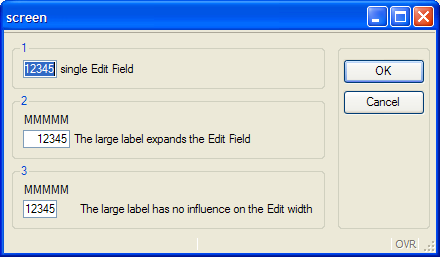
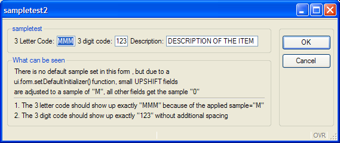
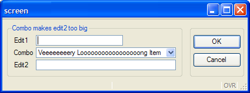
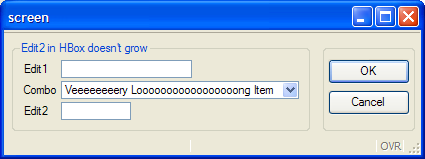
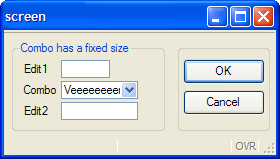
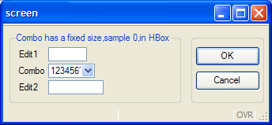

This page describes product changes you must be aware of when upgrading from version 1.2x to version 1.3x of Genero BDL.
Warning: This is an incremental upgrade guide that covers only topics related to a specific version of Genero. Also check prior upgrade guides if you migrate from an earlier version.
Summary:
When migrating to a 1.3x runtime system, you need to upgrade all front-end clients to any 1.3x version. Front-end clients and runtime systems are compatible if the major version number and the first minor number are the same (X.Y?). A front-end of version 1.31 works with a 1.30 runtime system, but if you try to use a 1.20 client with a 1.30 runtime system, you will get an error message.
Version 1.30 provides dialog methods to control action and field activation:
ui.Dialog.setActionActive( action-name,
TRUE/FALSE )
ui.Dialog.setFieldActive( field-name,
TRUE/FALSE )
Previous versions allowed to modify directly the 'active' attribute of the underlying DOM node in the AUI tree; This is now forbidden: It is mandatory to use the above methods to enable/disable action or fields. The dialog will synchronize the 'active' attribute in the AUI tree according to the value passed to the methods and according to the context (some actions or fields can be automatically disabled).
HBox Tags allow you to stack form items horizontally without being influenced by elements above or below. In an HBox there is a free mix of Form Fields, labels, and Spacer Items possible.
A typical usage of an HBox Tag is to have zip-code/city form fields side by side with predictable spacing in-between.
The "classic" layout would look like the following form definition:
<G "User Data(version 1.20)" >
Last Name [l_name
]First Name[f_name ]
Street [street ]
City [city ]Zip Code[zip ]
Phone(private)[phone ] At work [ ]
Code [aa]-[ab]-[ac]
In the screenshot you will notice that the distance
between "l_name" and "First Name" is smaller than between
"First Name" and "f_name". How can this be?
Two lines below there is the "zip" field which affects this distance.
If we put HBox Tags around the fields we want to group horizontally
together, we get the predictable spacing between "l_name",
"First Name" and "f_name".
<G "User Data in HBoxes stacked" >
Last Name [l_nameh :"First
Name":f_nameh ]
Street [streeth :]
City [cityh :"Zip
Code":ziph : ]
Phone(private)[phoneh :"At
work":phonewh : ]
Code [ba:"-":bb:"-":bc: ]
Here "l_nameh","First Name" and "f_nameh" are together in
one HBox; the ":" colon acts as a separator between the 3 elements.
The width of an element is calculated from the space between "[" and ":"
(width of cityh is 14), or from the space between ":"
and ":" (width of "bb" is 2), or from the space between
":" and "]"
(width of "f_nameh" is 16). The "zip" field in the version 1.20 example has
a width of five and the "ziph" field has also a width of five.
In the second Groupbox in the screenshot you will notice that the HBox is smaller than the first one, even though it uses two characters more in the screen definition. The reason is that each HBox occupies only ONE cell in the parent grid, and the content in one HBox is independent of the content in another HBox. This relaxes the parent grid; it has to align only the edges of the HBoxes and the labels left of the HBoxes. The two extra characters in the Form file for the second Group come from the fact that the labels need quoting to distinguish them from field definitions. Of course, you could use a Label field if the two extra characters are unwanted (which is done in the third Groupbox).
The third Groupbox shows how the alignment in an HBox can be affected by
putting empty elements (: :) inside the HBox Tag:
<G "User Data in HBoxes right part right aligned" >
Last Name [l_nameh2 : :lfirsth2:f_nameh2 ]
Street [streeth2 ]
City [cityh2 :
:lzip:ziph2]
Phone(private)[phoneh2 :
:latw:phonewh2 ]
Code [ca: "-" :cb: "-"
:cc]
Between "l_nameh2" and "lfirsth2" there are
two ":" signs with a white space between them. This means: put a Spacer Item
between l_nameh2 and lfirsth2, which gets all the additional space if the
HBox is bigger than the sum of l_nameh2, lfirsth2 and
f_nameh2. The number of spaces, however, has no effect. The spacer item between
cityh2 and lzip has the same force as the spacer between
l_nameh2 and lfirsth2.
You can treat a spacer item like a spring. The spacer item between cityh2
and lzip presses cityh2 to the left-hand side, and the rest of the fields
to the right-hand side. In the "Code" line there is more than one spacer
item; they share the additional space among them. (The "Code" HBox sample in the
third line is only to show how spacer items work; we always advise using "Code"
as in the second Groupbox, or to use a picture)
In general we advise using the approach shown in the second Groupbox: stack the items
horizontally by replacing field ends with ":". This is the easy way
to remove unwanted horizontal spacing.
The resulting screenshot:
A big advantage in using elements in an HBox is that the fields get their real sizes according to the .per definition.
LAYOUT
GRID
{
<G g1 >
[a ] single Edit Field
<G g2 >
MMMMM
[b ] The large label expands the Edit Field
<G g3 >
MMMMM
[c :]The large label has no influence on the Edit width
}
END
END
ATTRIBUTES
EDIT a = formonly.a, sample="0", default="12345";
EDIT b = formonly.b, sample="0", default="12345";
EDIT c = formonly.c, sample="0", default="12345";
END
In the second Groupbox, the edit field is expanded to be as large as the label above; using an HBox prevents this:

Note: in this example, we use a sample of "0" to display exactly five numbers.
The problem with BUTTONEDIT, DATEEDIT and COMBOBOX in previous versions is that a field [b ]
got the width 3, the same width as an edit field with the same layout.
For example:
LAYOUT
GRID
{
[e ]
[b ]
}
END
END
ATTRIBUTES
EDIT e=formonly.e;
BUTTONEDIT b=formonly.b;
END
In this example, the outer (visual) width of both elements was the same, but the edit portion of
"b" was much smaller, because the button did not count at all. (In practice this
meant that on average only one and a half characters of
"b" was visible). However, you could input 3 characters! This made a
BUTTONEDIT where you could see only one character and input only one character without
tricks impossible.
Now, for the Button, the Form Compiler subtracts two character positions from the width of BUTTONEDIT/COMBOBOX/DATEEDIT. This is possible because now the form compiler differentiates the width of the widget from the width of the entry part.
In fact, there is no visual difference between version 1.20 and 1.30 regarding this example, but in version 1.30 you can only enter one character, which is visually more correct.
In the example the BUTTONEDIT aligns with the Edit; that's why the Edit part of the BUTTONEDIT is usually still a bit bigger than one character (this depends on the button size, but if a button edit is contained by an HBox, it will get the exact size of "width" multiplied by the average character pixel width.
To express the BUTTONEDIT/COMBOBOX/DATEEDIT layout more visually, it is possible to specify:
[e ]
[b- ]
the "-" sign marks the end of the edit portion and the beginning of
the button portion ( edit width ="1", widget width ="3" ).
The two characters are also subtracted for a BUTTONEDIT which is child of an HBox.
[b :]
gets also width="1" , but no widget width, because the HBox stacks the elements horizontally without needing widget width definition.
The two extra characters are only used to show the real size relations more WYSIWYG, and to have the same calculation as in a field without an HBox parent.
[e1:e2:e3: ]
[b1 :b2 :b3 ]
shows that three BUTTONEDIT fields are much larger than three EDIT fields with the same width.
You can even write:
[e1:e2:e3: ]
[b1- :b2- :b3- ]
or:
[e1:e2:e3: ]
[b1-:b2-:b3-]
to use slim buttons and
[e1:e2:e3: ]
[b1- :b2- :b3- ]
if one uses large buttons to get the maximum WYSIWYG effect.
Please note that buttons do not grow if two characters "- " is
expanded to three characters "- ";
the button always computes its size from the image used, it's just to reserve more
space in the form to match the real size.
If no SAMPLE attribute is specified in the form files, the client uses an algorithm to compute the field width. In this case, a very pessimistic algorithm is used to compute the field widths: The client assumes a default SAMPLE of "M" for the first six characters and then "0" for the subsequent characters and applies this algorithm to all fields, except some field types like DATEEDIT fields.
The default algorithm tends to produce larger forms compared to forms used in BDL V3 and very first versions of Genero. Do not hesitate to modify the SAMPLE attribute in the form file, to make your fields shorter.
If you do not want to touch all your forms, a more tailored automatic solution would be to specify a ui.form.setDefaultInitiallizer() function, to set the SAMPLE depending on the AUI tag. In the following example small UPSHIFT fields get a sample of "M"; all other fields get a sample of "0". This will preserve the original width for UPSHIFT fields, however numeric and normal String fields will get the sample of "0" and make the overall width of the form smaller.
Program:
# this demo program shows how to affect the "sample" attribute in a
# ui.form.setDefaultInitializer function
# the main concern is to set a default sample of "0" and to
# correct the sample attribute for small UPSHIFT fields to "M"
# to be able to display full uppercase letter for fields with a small width
MAIN
DEFINE three_char_upshift CHAR(3)
DEFINE three_digit_number Integer
DEFINE longstring CHAR(100)
CALL ui.form.setDefaultInitializer("myinit")
OPEN form f from "sampletest2"
DISPLAY form f
INPUT BY NAME three_char_upshift,three_digit_number,longstring
END MAIN
FUNCTION myInit(f)
DEFINE f ui.Form
CALL checkSampleRecursive(f.getNode())
END FUNCTION
FUNCTION checkSampleRecursive(node)
DEFINE node,child om.DomNode
LET child= node.getFirstChild()
WHILE child IS NOT NULL
CALL checkSampleRecursive(child)
CALL setSample(child)
LET child=child.getNext()
END WHILE
END FUNCTION
FUNCTION setSample(node)
DEFINE node,parent om.DomNode
LET parent=node.getParent()
-- only set the "sample" for FormFields in this example
IF parent.getTagName()<>"FormField" THEN
RETURN
END IF
IF node.getAttribute("shift")="up" AND node.getAttribute("width")<=6 THEN
CALL node.setAttribute("sample","M")
ELSE
CALL node.setAttribute("sample","0")
END IF
DISPLAY "set sample attribute of ",node.getId()," to \"",node.getAttribute("sample"),"\""
END FUNCTION
Form File:
LAYOUT(text="sampletest2")
GRID
{
<G sampletest
>
3 Letter Code: [a ] 3 digit code:[b ] Description:[longstring ]
<G "What can be
seen"
>
There is no default sample set in this form, but due to a
ui.form.setDefaultInitializer function, small UPSHIFT fields
are adjusted to a sample of "M", all other fields get the sample "0"
-----------------------------------------------------------------------------------
1. The 3 letter code should show up exactly "MMM" because of the applied sample="M"
2. The 3 letter digit code should show up exactly "123" without additional
spacing
}
END
END
ATTRIBUTES
EDIT a=formonly.three_char_upshift,UPSHIFT,default="MMM";
EDIT b=formonly.three_digit_number,default="123";
EDIT longstring=formonly.longstring,UPSHIFT,default="DESCRIPTION OF THE
ITEM",SCROLL;
END

Please refer to the SAMPLE documentation for more information.
COMBOBOX items were VERY special in previous versions because they adapted their size to the maximum item of the value list. On one hand, this is very convenient because the programmer doesn't have to find the biggest string in the value list, and to estimate how large it will be on the screen (with proportional fonts the string with the highest number of characters is not automatically the largest string). On the other hand, this behavior often led to an unpredictable layout if the programmer didn't reserve enough space for the COMBOBOX.
The SIZEPOLICY attribute gives better control of the result.
<G "Combo makes edit2 too big" >
[edit1]
[combo ]
[edit2 ]
...
ATTRIBUTES
EDIT edit1=formonly.edit1;
COMBOBOX combo=formonly.combo,
ITEMS=((0,"Veeeeeeeery Loooooooooooooooong Item"),(1,"hallo")),
DEFAULT=0;
EDIT edit2=formonly.edit2;
END

In this case, the "combo" field gets very large as
does "edit2", because it ends in the same grid
column.
It will confuse the end user if he can input only eight characters and the field is apparently much bigger.
Two possibilities exist to surround this:
Use an HBox to prevent the edit2 from growing, and use HBoxes
for all fields which start together with combo and are as large or bigger than
combo
<G "Edit2 in HBox doesn't grow" >
[edit1]
[combo :]
[edit2 :]
...

Use the new SIZEPOLICY attribute,
and set it to fixed to prevent
combo from getting bigger than the initial six characters (6+Button)
<G "Combo has a fixed size" >
...
[combo ]
[edit2 ]
...
ATTRIBUTES
...
COMBOBOX combo=formonly.combo,
ITEMS = ((0,"Veeeeeeeery Looooooooooooooooong
Item"),(1,"hallo")),
DEFAULT=0, SIZEPOLOCY=FIXED ;
....

Note that in this example the edit2 dictates the
maximum size of combo, because even if the SIZEPOLICY is fixed, the elements are aligned by the Grid.
To prevent this and have exactly six characters (numbers) in the
ComboBox, you need to decouple combo from edit2 by
using an HBox.
<G "Combo has a fixed size,sample 0,in HBox" >
...
Combo [combo :]
Edit2 [edit2 :]
...
COMBOBOX combo=formonly.combo,
ITEMS = ((0,"12345678 Looooooooooooooooong
Item"),(1,"hallo")),
DEFAULT=0, SIZEPOLICY=FIXED, SAMPLE="0";

Now the wanted six numbers are displayed and combo does not grow
to the size of edit2.
Please refer to the SIZEPOLICY documentation for more information.
It is now possible to define action defaults in forms. In previous versions you had to define a global action default file; this works for defining common global action attributes, but there is a need to define specific action attributes in some forms. A typical zoom window may have search and navigation actions, while data input windows need to define add/delete/update actions instead.
It is now possible to define an action default section in the form file, and you can also load action defaults with ui.Form.loadActionDefaults().
Version 1.32 supports MySQL 3.23.x, but there is no support for recent MySQL versions.
Version 1.33 now de-supports MySQL 3.23.x, but supports MySQL 4.1.2 and higher (5.0).
For technical reasons, MySQL 4.0.x cannot be supported.